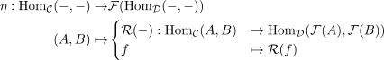

functor induces natural transformation for hom functors
1. Proposition
Let  be categories and
be categories and  a functor
Then there exists a natural transformation for the hom-functor and the postcomposition of a functor for the hom functor
a functor
Then there exists a natural transformation for the hom-functor and the postcomposition of a functor for the hom functor

Let be categories and a functor
Then there exists a natural transformation for the hom-functor and the postcomposition of a functor for the hom functor
